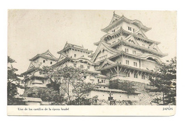
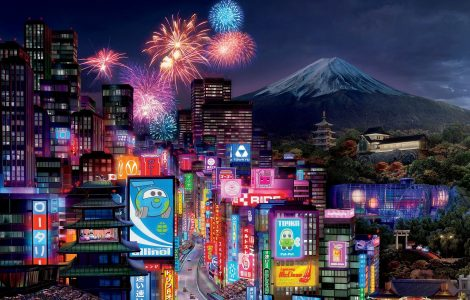

Historia
Japón ha estado habitado desde el Paleolítico superior (30 000 a. C.), aunque las primeras menciones del archipiélago aparecen en las
crónicas chinas del siglo i. Entre los siglos iv y ix, los reinos de Japón se unificaron bajo un emperador y su corte imperial con sede en Heian-kyō.
Sin embargo, a partir del siglo xii, el poder político estaba en manos de una serie de dictadores militares (shōgun) y señores feudales (daimyō),
y lo imponía una clase de nobleza guerrera (samuráis). Después de un siglo de guerra civil, el país se reunificó en 1603 bajo el shogunato Tokugawa,
cuando puso en práctica una política exterior aislacionista. En 1854, una flota de los Estados Unidos obligó a Japón a abrir el comercio con Occidente,
lo que provocó el fin del shogunato y la restauración del poder imperial en 1868. En el período Meiji, el Imperio de Japón adoptó una constitución de
estilo occidental y prosiguió un programa de industrialización y modernización. En 1937, Japón invadió China y cuatro años después entró en la
Segunda Guerra Mundial como potencia del Eje. Después de sufrir la derrota en la Guerra del Pacífico y dos bombardeos atómicos, Japón se rindió en 1945
y quedó bajo una ocupación aliada de siete años, en la que adoptó una nueva constitución. Desde 1947, Japón ha mantenido una monarquía constitucional
parlamentaria unitaria con una legislatura bicameral, la Dieta Nacional. Japón es una gran potencia y miembro de numerosas organizaciones internacionales,
incluidas las Naciones Unidas (desde 1956), la OCDE y el G7. Aunque ha renunciado a su derecho a declarar la guerra, el país mantiene Fuerzas de Autodefensa
que están clasificadas como el cuarto ejército más poderoso del mundo. Después de la Segunda Guerra Mundial, Japón experimentó un alto crecimiento económico,
convirtiéndose en 1990 la segunda economía más grande del mundo antes de ser superado por China en 2010. A pesar del crecimiento estancado desde la
década perdida, la economía del país sigue siendo la tercera más grande por PIB nominal y la cuarta más grande por PPA. Líder en las industrias automotriz y
electrónica, Japón ha realizado importantes contribuciones a la ciencia y la tecnología. Clasificado como el segundo país más alto en el índice de desarrollo
humano de Asia después de Singapur, Japón tiene la segunda esperanza de vida más alta del mundo, aunque está experimentando una disminución de la población.
La cultura japonesa es bien conocida en todo el mundo, incluido su arte, cocina, música y cultura popular, que abarca industrias prominentes de la animación
y los videojuegos.

foto en blanco y negro del Japón feudal, PINCHA FOTO PARA ACCEDER A "LUGARES DEL JAPÓN TRADICIONAL"

Japón actual, PINCHA FOTO PARA ACCEDER A "LUGARES DEL JAPÓN FUTURISTA"